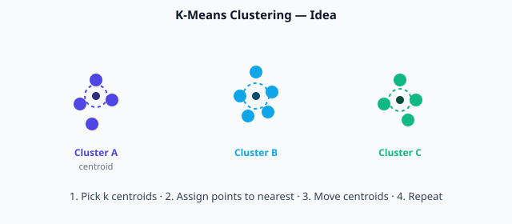

Module 6 — Unsupervised Learning
Clustering · Dimensionality Reduction · No labels required
Supervised vs Unsupervised
Supervised — every training example has a label (price, class).
Unsupervised — only features; the algorithm finds structure (groups, directions of variance) by itself.
Use cases: customer segmentation, anomaly detection, topic discovery, compressing features before a supervised model.
K-Means Clustering
Partition data into k groups by distance to centroids

K-Means: assign points to nearest centroid, then move centroids, repeat
Algorithm (4 steps)
- Choose k (number of clusters) and place k centroids (random or smart init).
- Assign every point to the nearest centroid (usually Euclidean distance).
- Move each centroid to the mean of the points assigned to it.
- Repeat 2–3 until assignments stop changing (or max iterations).
Data: [1, 2, 3, 10, 11, 12]. Start centroids c1=1, c2=12.
- Assign: 1,2,3 → cluster1; 10,11,12 → cluster2
- Update: c1 = mean(1,2,3) = 2; c2 = mean(10,11,12) = 11
- Assignments unchanged → stop.
Choosing k — Elbow method idea
Plot total within-cluster sum of squares (inertia) for k=1,2,3,… The “elbow” where improvement slows is a good candidate for k.
DBSCAN
Density-Based Spatial Clustering of Applications with Noise
Core idea
Clusters are dense regions separated by sparse regions. Points in low-density areas are labelled noise (great for anomaly detection).
- eps — neighbourhood radius
- min_samples — minimum points to form a dense region
A point is a core point if it has at least min_samples neighbours within eps. Clusters grow by connecting core points and their neighbours.
When to prefer DBSCAN over K-Means
- You do not know k in advance
- Clusters have irregular shapes
- You want to flag outliers automatically
Dimensionality Reduction
PCA and the idea of projecting to fewer axes
Why reduce dimensions?
- Visualise high-dimensional data in 2D/3D
- Remove noise and redundancy
- Speed up downstream models
- Fight the “curse of dimensionality”
PCA — Principal Component Analysis (intuition)
PCA finds new axes (principal components) that capture the maximum variance in the data. The first PC is the direction of greatest spread; the second is the next orthogonal direction, and so on. You keep the top few PCs and discard the rest.
Two features that are almost linearly related (height cm, height inches). Almost all variance lies along one direction. PCA collapses them to a single principal component that still explains ~99% of the variance — one number instead of two, with almost no information loss.
Other methods (names only for now)
- t-SNE / UMAP — non-linear, excellent for 2D visualisation of clusters
- Autoencoders — neural nets that compress then reconstruct (deep unsupervised)
K-Means requires you to specify in advance:
Module 6 — Key takeaways
- Unsupervised learning finds structure without labels.
- K-Means: iterative centroid assignment; choose k carefully.
- DBSCAN: density-based; finds arbitrary shapes and noise.
- PCA: project onto directions of maximum variance for compression and visualisation.